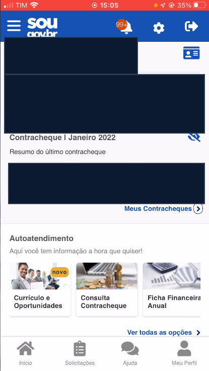

Designer de Experiência do Usuário especializado em pesquisa de usabilidade em sistemas de grande porte. Conduzo o ciclo completo, do diagnóstico do problema à validação com usuários, traduzindo evidência qualitativa e quantitativa em decisões estratégicas de produto.
User Experience Designer specialising in usability research on large-scale systems. I lead the full cycle, from diagnosing the problem to validating with users, turning qualitative and quantitative evidence into strategic product decisions.
PROJETO 03 · GOVERNO FEDERAL · 2022–2026CASE STUDY 03 · FEDERAL GOVERNMENT · 2022–2026
Acessibilidade SouGov
Três ciclos de pesquisa sobre como servidores cegos e com baixa visão usam o SouGov.br — do contracheque ao registro de frequência. Telas diferentes, o mesmo padrão de falha: a interface não foi construída para ser lida.
Three research cycles into how blind and low-vision civil servants use SouGov.br — from payslips to time records. Different screens, the same failure pattern: the interface was not built to be read.
O PROBLEMATHE PROBLEM
O SouGov.br concentra direitos e rotinas de milhões de servidores. Para quem depende de leitor de tela, tarefas simples — consultar um contracheque, editar o currículo, registrar o ponto — viram um exercício de adivinhar o que a interface não anuncia.SouGov.br concentrates rights and routines for millions of civil servants. For people who rely on a screen reader, simple tasks — checking a payslip, editing a CV, clocking in — become an exercise in guessing what the interface does not announce.
MEU PAPELMY ROLE
Coordenação de pesquisa na Secretaria de Governo Digital. Planejamento, condução das sessões e da inspeção com tecnologia assistiva, consolidação dos achados e apresentação do relatório ao time de desenvolvimento. No ciclo de 2026, o trabalho foi feito em parceria entre o LabQ e o Sougov Mais Acessibilidade.Research coordination at the Secretariat of Digital Government. Planning, running the sessions and the assistive-technology inspection, consolidating the findings and presenting the report to the development team. In the 2026 cycle, the work was carried out in partnership between LabQ and Sougov Mais Acessibilidade.
O ESCOPOTHE SCOPE
6 fluxos de uso, 3 ciclos entre 2022 e 2026, 3 perfis de navegação. 5 participantes com deficiência visual em 2024, 3 servidores cegos no estudo de contracheque de 2022 e uma inspeção com TalkBack na Frequência em 2026.6 usage flows, 3 cycles between 2022 and 2026, 3 navigation profiles. 5 participants with visual disabilities in 2024, 3 blind civil servants in the 2022 payslip study and a TalkBack inspection of Frequência in 2026.
O RESULTADOTHE OUTCOME
Relatório com classificação, prioridade, localização e sugestão para cada achado, apresentado ao time responsável pelo desenvolvimento, com acompanhamento do projeto pela equipe de UX Design.A report with a classification, priority, location and recommendation for each finding, presented to the development team, with project follow-up by the UX Design team.
6
fluxos analisadosflows analysed
3
ciclos de pesquisaresearch cycles
5
participantes em 2024participants in 2024
21
achados na inspeção de 2026findings in the 2026 inspection
01
O contextoThe context
O gov.br é a porta de entrada dos serviços digitais do Governo Federal. O SouGov.br é a plataforma de gestão de pessoas para servidores ativos, aposentados e pensionistas: é ali que se consulta o contracheque, se organiza o currículo, se acompanham férias e se registra a frequência. Em 2022, eram cerca de 1,3 milhão de usuários e mais de 14 mil servidores atuando nas unidades de gestão de pessoas.
gov.br is the gateway to the Federal Government’s digital services. SouGov.br is the people-management platform for active and retired civil servants and pensioners: it is where they check payslips, organise their CV, follow holiday balances and record attendance. In 2022, there were around 1.3 million users and more than 14,000 civil servants working in people-management units.
Para quem usa leitor de tela, o acesso começa antes da tela: o login é feito pelo gov.br, e qualquer barreira ali interrompe a jornada inteira. Depois, cada funcionalidade impõe seu próprio modelo de navegação. O problema não é de um componente isolado: é de como a informação é estruturada, anunciada e confirmada em todo o percurso.
For screen-reader users, access starts before the screen: sign-in happens through gov.br, and any barrier there interrupts the entire journey. After that, each feature imposes its own navigation model. The problem is not an isolated component: it is how information is structured, announced and confirmed along the whole path.
OS 6 FLUXOS ANALISADOSTHE 6 FLOWS ANALYSED
Este case detalha os três fluxos com evidência documentada: contracheque, currículo/oportunidades e frequência. Login, tela inicial e férias integram o escopo da pesquisa.This case details the three flows with documented evidence: payslip, CV/opportunities and attendance. Sign-in, app home and holidays are part of the research scope.

02
Como a pesquisa foi conduzidaHow the research was run
O mesmo desenho atravessou os ciclos: observar a tarefa com a tecnologia assistiva que a pessoa realmente usa, sem simular o leitor de tela. Testes com pensamento em voz alta, entrevistas e inspeção de interfaces se complementam — cada um responde a uma pergunta diferente.The same design ran through the cycles: observe the task with the assistive technology the person actually uses, without simulating the screen reader. Think-aloud tests, interviews and interface inspection complement each other — each answers a different question.
01
Testes de usabilidadeUsability tests
Tarefas nos fluxos, com pensamento em voz alta. O participante narra o que procura, o que ouve e onde se perde; o pesquisador observa sem conduzir.Tasks across the flows, with think-aloud. The participant narrates what they look for, what they hear and where they get lost; the researcher observes without leading.
02
EntrevistasInterviews
Modelo mental, rotina, estratégias de navegação e expectativas sobre o que a interface deveria anunciar.Mental model, routine, navigation strategies and expectations about what the interface should announce.
03
Inspeção com tecnologia assistivaAssistive-technology inspection
VoiceOver (iOS) e TalkBack (Android) percorrendo as telas passo a passo, com registro do que é lido, do que é pulado e do que é lido errado.VoiceOver (iOS) and TalkBack (Android) walking through the screens step by step, recording what is read, what is skipped and what is read wrongly.
04
Accessibility ScannerAccessibility Scanner
Varredura automática das interfaces para complementar a inspeção manual — não para substituí-la.Automated scanning of the interfaces to complement the manual inspection — not to replace it.
05
Análise e relatórioAnalysis and report
Achados classificados e priorizados, com a tela onde aparecem e uma sugestão de melhoria para cada um.Findings classified and prioritised, with the screen where they appear and an improvement suggestion for each.
O que a pesquisa não fez. Não mediu adoção nem impacto, e não acompanhou a implantação das correções. O que este case documenta é o diagnóstico e a entrega das recomendações.What the research did not do. It did not measure adoption or impact, nor did it follow the implementation of fixes. This case documents the diagnosis and the delivery of recommendations.
03
Três perfis de navegaçãoThree navigation profiles
A pesquisa não agrupou os participantes por tipo de deficiência, mas por como eles navegam. Três perfis descrevem o modelo mental observado — e ajudam a explicar por que o mesmo defeito afeta pessoas de formas diferentes.The research did not group participants by type of disability, but by how they navigate. Three profiles describe the observed mental model — and help explain why the same defect affects people differently.
PERFIL 01PROFILE 01
BásicoBasic
Navega passo a passo, arrastando o dedo para frente e para trás, como quem usa Tab no teclado. Depende de uma sequência previsível: cada parada precisa anunciar o que é e para onde leva.Navigates step by step, swiping the finger back and forth, like someone using Tab on a keyboard. Depends on a predictable sequence: each stop must announce what it is and where it leads.
Onde quebra: pulos de texto, hierarquia inadequada e elementos sem rótulo.Where it breaks: skipped text, poor hierarchy and unlabelled elements.
PERFIL 02PROFILE 02
IntermediárioIntermediate
Arrasta o dedo no sentido da leitura ocidental, da esquerda para a direita e de cima para baixo. Guia-se pelo som — a leitura, o texto alternativo — e pelo tato, com a vibração ao encontrar uma área de informação ou interação.Drags a finger in the direction of Western reading, left to right and top to bottom. Guided by sound — speech, alt text — and by touch, with vibration when finding an information or interaction area.
Onde quebra: quando a ordem visual e a ordem de leitura não coincidem.Where it breaks: when visual order and reading order do not match.
PERFIL 03PROFILE 03
AvançadoAdvanced
Age de forma livre, mapeando a interface com o dedo sem se limitar a um caminho padronizado, como se já tivesse um mapa mental da estrutura. Usa atalhos e agrupamentos; sofre quando o mapa que construiu deixa de corresponder ao que a tela anuncia.Acts freely, mapping the interface with a finger without being limited to a standard path, as if they already had a mental map of the structure. Uses shortcuts and groupings; struggles when the map they built no longer matches what the screen announces.
Onde quebra: quando o atalho que funcionava deixa de existir ou muda de lugar.Where it breaks: when a shortcut that worked disappears or moves.
Os perfis descrevem comportamento de navegação, não diagnóstico clínico. A mesma pessoa pode transitar entre eles conforme a familiaridade com a tela.The profiles describe navigation behaviour, not a clinical diagnosis. The same person may move between them depending on familiarity with the screen.
04
Três ciclos, um processoThree cycles, one process
Cada ciclo mudou o recorte e a tecnologia assistiva, mas manteve a mesma pergunta: a pessoa consegue concluir a tarefa com o leitor de tela que ela usa?Each cycle changed the scope and the assistive technology, but kept the same question: can the person complete the task with the screen reader they use?
2022
Contracheque e currículoPayslip and CV
Em fevereiro, um estudo com 3 servidores cegos de diferentes regiões sobre o contracheque no celular. Em agosto, uma análise de Currículo e Oportunidades com 1 usuário cego, iPhone e VoiceOver (iOS 15.6.1).In February, a study with 3 blind civil servants from different regions on the mobile payslip. In August, a CV and Opportunities analysis with 1 blind user, an iPhone and VoiceOver (iOS 15.6.1).
O que ficou: a primeira correção reduziu a navegação para 21 áreas até “meus contracheques”, mas as áreas expansíveis e o botão de download seguiam inacessíveis.What remained: the first fix reduced navigation to 21 areas before “my payslips”, but the expandable areas and the download button were still inaccessible.
2024
Currículo e OportunidadesCV and Opportunities
5 participantes com deficiência visual — cegueira e baixa visão — em sessões de desktop e celular, em junho de 2024, com VoiceOver, NVDA, zoom, lupa e Virtual Vision. Uma inspeção especializada combinou leitor de tela, análise de HTML e axe DevTools.5 participants with visual disabilities — blindness and low vision — in desktop and mobile sessions in June 2024, with VoiceOver, NVDA, zoom, magnifier and Virtual Vision. A specialist inspection combined a screen reader, HTML analysis and axe DevTools.
O que ficou: os mesmos obstáculos apareceram em perfis e tecnologias diferentes — abas, formulários, listas de oportunidades e falta de feedback.What remained: the same obstacles appeared across profiles and technologies — tabs, forms, opportunity lists and lack of feedback.
2026
FrequênciaTime and attendance
Inspeção com TalkBack (Android) na versão de março de 2026, em 3 fluxos: registro de ponto, ficha de frequência e autorizações. 21 achados numerados e categorizados por tipo de falha, em parceria entre o LabQ e o Sougov Mais Acessibilidade.TalkBack (Android) inspection of the March 2026 version, across 3 flows: clock-in record, attendance sheet and authorisations. 21 numbered findings categorised by type of failure, in partnership between LabQ and Sougov Mais Acessibilidade.
O que ficou: calendários heterogêneos, números lidos fora de contexto, botões que não são botões e texto alternativo ausente ou errado.What remained: inconsistent calendars, numbers read out of context, buttons that are not buttons, and missing or wrong alt text.
Os ciclos não são uma série longitudinal: mudaram o escopo, a versão do produto e o método. O que se repete é o padrão de falha, não a mesma tela.The cycles are not a longitudinal series: scope, product version and method changed. What repeats is the failure pattern, not the same screen.
05
O que se repetia entre os ciclosWhat kept repeating across cycles
Sete problemas atravessaram as telas e as tecnologias assistivas. A recorrência aponta para uma causa comum: a interface foi construída para quem vê, e a acessibilidade entrou como ajuste posterior.Seven problems ran across screens and assistive technologies. The recurrence points to a common cause: the interface was built for people who see, and accessibility came in as a later adjustment.
01
Áreas de toque pequenasSmall touch targets
Alvos menores que o recomendado e divs sobrepostas dificultam a exploração por toque.Targets smaller than recommended and overlapping divs make touch exploration harder.
02
Elementos não identificadosUnidentified elements
Botões, ícones e campos que o leitor não anuncia ou anuncia como outra coisa.Buttons, icons and fields the reader does not announce, or announces as something else.
03
Hierarquia de leitura inadequadaPoor reading hierarchy
Títulos sem nível, blocos lidos de uma vez e ordem que não corresponde à tela.Headings without level, blocks read all at once, and an order that does not match the screen.
04
Interação inacessívelInaccessible interaction
Componentes que só respondem ao mouse ou ao toque visual, como abas, estrelas e carrosséis.Components that only respond to a mouse or visual touch, such as tabs, star ratings and carousels.
05
Falta de rótulosMissing labels
Campos, ícones e estados sem nome acessível; o usuário precisa adivinhar.Fields, icons and states without an accessible name; the user has to guess.
06
Navegação e legibilidadeNavigation and legibility
Migalhas, menus e instruções que não dizem onde a pessoa está nem para onde vai.Breadcrumbs, menus and instructions that do not say where the person is or where they are going.
07
Descrição inadequadaInadequate description
Texto alternativo que repete o nome do arquivo, descreve a forma e não a função, ou usa referências espaciais.Alt text that repeats the file name, describes shape rather than function, or uses spatial references.
06
Os achados em destaqueThe headline findings
Oito achados mostram como o padrão se manifesta. Cada um traz a evidência de um ciclo, a recomendação registrada no relatório e, quando há, a tela correspondente.Eight findings show how the pattern manifests. Each brings the evidence from one cycle, the recommendation recorded in the report and, where available, the corresponding screen.
por cicloby cycleOutros achados registrados nos relatóriosMore findings recorded in the reports
2022
2024
2026
07
O que funcionouWhat worked
O diagnóstico não foi só uma lista de defeitos. Alguns pontos já funcionavam — e mostram que o caminho é possível quando a estrutura certa está no lugar.The diagnosis was not just a list of defects. Some points already worked — and show the path is possible when the right structure is in place.
08
Recomendações e entregaRecommendations and delivery
O relatório não era uma lista de defeitos. Cada achado saiu com quatro informações, para que o time de desenvolvimento pudesse agir sem refazer a pesquisa.The report was not a list of defects. Each finding came with four pieces of information, so the development team could act without redoing the research.
01
ClassificaçãoClassification
Que tipo de falha é: leitura errada, pulo, elemento repetido, hierarquia ou interação quebrada.What kind of failure it is: wrong reading, skip, repeated element, hierarchy or broken interaction.
02
PrioridadePriority
O que impede a tarefa e o que apenas a torna mais lenta ou confusa.What blocks the task and what merely makes it slower or more confusing.
03
Onde apareceWhere it appears
A tela e o passo do fluxo em que o leitor falhou, para o time reproduzir o problema.The screen and flow step where the reader failed, so the team can reproduce the problem.
04
SugestãoRecommendation
O que mudar na interface, no componente ou no conteúdo para a tarefa funcionar.What to change in the interface, component or content so the task works.
O conjunto foi apresentado ao time responsável pelo desenvolvimento, e o projeto seguiu com acompanhamento da equipe de UX Design. A entrega não terminava no PDF: o objetivo era garantir que cada correção fosse compreendida e priorizada.
The set was presented to the development team, and the project continued with follow-up by the UX Design team. Delivery did not end with the PDF: the goal was to ensure every fix was understood and prioritised.
As recomendações convergiam para seis frentes — as mesmas que explicam por que o problema se repetia entre telas.
The recommendations converged on six fronts — the same ones that explain why the problem repeated across screens.
HTML semântico e ARIASemantic HTML and ARIA
Títulos com nível, listas, botões nativos, papéis e estados corretos.Headings with levels, lists, native buttons, correct roles and states.
Componentes acessíveisAccessible components
Abas, calendário, avaliação, carrossel e caixas de seleção com comportamento de teclado e leitor.Tabs, calendar, rating, carousel and combo boxes with keyboard and reader behaviour.
Rótulos e texto alternativoLabels and alt text
Nome acessível para cada campo, ícone e ação; descrição da função, não da forma.An accessible name for every field, icon and action; description of function, not shape.
Feedback de estadoState feedback
Carregamento, sucesso e erro anunciados; mensagens associadas ao campo.Loading, success and error announced; messages tied to the field.
Áreas de toque e ordem de leituraTouch targets and reading order
Alvos maiores, sem sobreposição, e ordem que acompanha o que a pessoa ouve.Larger targets, no overlap, and an order that follows what the person hears.
Conteúdo e linguagemContent and language
Nomes claros, instruções antes da ação e ausência de referências espaciais.Clear names, instructions before the action and no spatial references.
O QUE ESTE CASE NÃO AFIRMAWHAT THIS CASE DOES NOT CLAIM
As fontes documentam a entrega e a apresentação do relatório. Elas não registram quais correções foram implementadas depois de cada ciclo, nem mediram adoção. Por isso, o case para nas recomendações e no que foi observado.The sources document the delivery and presentation of the report. They do not record which fixes were implemented after each cycle, nor did they measure adoption. That is why the case stops at the recommendations and at what was observed.
09
Aprendizado e limitesTakeaway and limits
Acessibilidade não é um pacote de ajustes no fimAccessibility is not a package of fixes at the end
O mesmo padrão apareceu em telas e ciclos diferentes. Corrigir um componente sem mexer na estrutura repete o problema na tela seguinte.The same pattern appeared across different screens and cycles. Fixing one component without changing the structure repeats the problem on the next screen.
O leitor de tela revela a arquiteturaThe screen reader reveals the architecture
Quando a ordem de leitura está errada, a hierarquia visual provavelmente também está. O teste com leitor funciona como um raio-X da interface.When the reading order is wrong, the visual hierarchy probably is too. Testing with a reader works like an X-ray of the interface.
Testar com quem usa a tecnologia muda a perguntaTesting with people who use the technology changes the question
A pergunta deixa de ser “tem ALT?” e passa a ser “a pessoa concluiu a tarefa?”. É o que separa conformidade de uso real.The question stops being “does it have alt text?” and becomes “did the person complete the task?”. That is what separates compliance from real use.
O relatório precisa caber no fluxo de desenvolvimentoThe report has to fit the development flow
Classificação, prioridade, tela e sugestão encurtam a distância entre o achado e a correção.Classification, priority, screen and recommendation shorten the distance between finding and fix.
LIMITES DESTE CASELIMITS OF THIS CASE
Escopos e versões diferentes. Os três ciclos não formam uma série longitudinal; mudaram o produto, o método e o recorte.Different scopes and versions. The three cycles do not form a longitudinal series; product, method and scope changed.
2022. 3 servidores cegos no estudo de contracheque; 1 usuário cego na análise de currículo.2022. 3 blind civil servants in the payslip study; 1 blind user in the CV analysis.
2024. 5 participantes, em pesquisa qualitativa; a amostra não é estatisticamente representativa.2024. 5 participants in qualitative research; the sample is not statistically representative.
2026. Inspeção com TalkBack, não uma sessão de usabilidade com usuários.2026. A TalkBack inspection, not a usability session with users.
Sem dados de impacto. Não há medição de adoção nem confirmação de quais correções entraram no ar.No impact data. There is no adoption measurement or confirmation of which fixes shipped.
Imagens. Telas de 2022 e 2026, com dados pessoais tarjados; participantes não identificados.Images. Screens from 2022 and 2026, with personal data redacted; participants not identified.